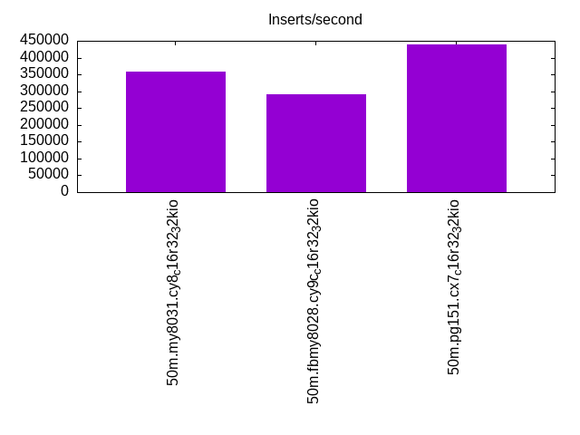
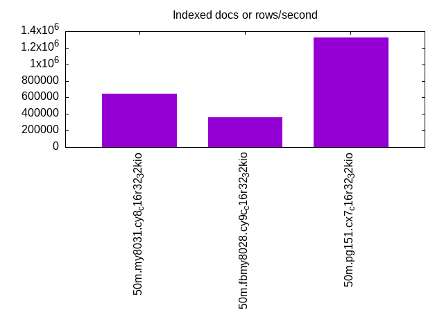
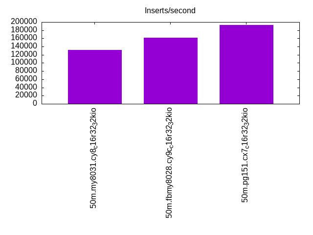
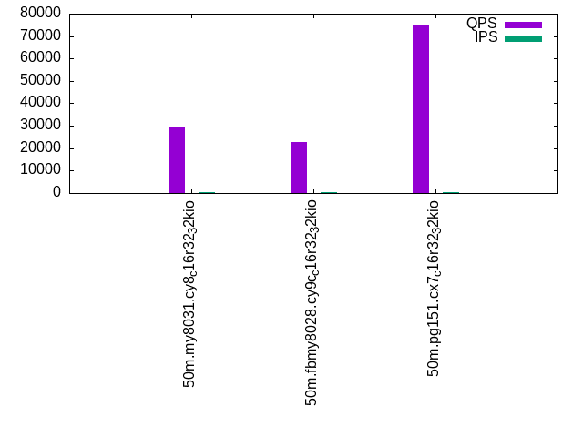
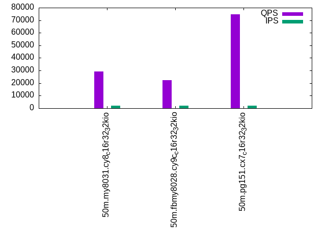

This is a report for the insert benchmark with 50M docs and 4 client(s). It is generated by scripts (bash, awk, sed) and Tufte might not be impressed. An overview of the insert benchmark is here and a short update is here. Below, by DBMS, I mean DBMS+version.config. An example is my8020.c10b40 where my means MySQL, 8020 is version 8.0.20 and c10b40 is the name for the configuration file.
The test server is a c7g.4xl with 16 cores, 32G RAM and io2 storage (1T, 32K IOPs). The benchmark was run with 4 clients and there was 1 or 2 connections per client (1 for queries, 1 for inserts). The benchmark loads 25M rows without secondary indexes, creates secondary indexes, loads another 25M rows then does 3 read+write tests for one hour each that do queries as fast as possible with 100, 500 and then 1000 writes/second/client concurrent with the queries. The database is cached by the storage engine and the only IO is for writes. Clients and the DBMS share one server. The per-database configs are in the per-database subdirectories here.
The tested DBMS are:
The numbers are inserts/s for l.i0 and l.i1, indexed docs (or rows) /s for l.x and queries/s for q*.2. The values are the average rate over the entire test for inserts (IPS) and queries (QPS). The range of values for IPS and QPS is split into 3 parts: bottom 25%, middle 50%, top 25%. Values in the bottom 25% have a red background, values in the top 25% have a green background and values in the middle have no color. A gray background is used for values that can be ignored because the DBMS did not sustain the target insert rate. Red backgrounds are not used when the minimum value is within 80% of the max value.
| dbms | l.i0 | l.x | l.i1 | q100.1 | q500.1 | q1000.1 |
|---|---|---|---|---|---|---|
| 50m.my8031.cy8_c16r32_32kio | 357143 | 643590 | 131579 | 29379 | 29168 | 28904 |
| 50m.fbmy8028.cy9c_c16r32_32kio | 290698 | 363768 | 161290 | 22572 | 22297 | 21984 |
| 50m.pg151.cx7_c16r32_32kio | 438596 | 1321053 | 192308 | 74621 | 74912 | 74599 |
This lists the average rate of inserts/s for the tests that do inserts concurrent with queries. For such tests the query rate is listed in the table above. The read+write tests are setup so that the insert rate should match the target rate every second. Cells that are not at least 95% of the target have a red background to indicate a failure to satisfy the target.
| dbms | q100.1 | q500.1 | q1000.1 |
|---|---|---|---|
| my8031.cy8_c16r32_32kio | 399 | 1996 | 3992 |
| fbmy8028.cy9c_c16r32_32kio | 399 | 1996 | 3992 |
| pg151.cx7_c16r32_32kio | 399 | 1997 | 3992 |
| target | 400 | 2000 | 4000 |
l.i0: load without secondary indexes. Graphs for performance per 1-second interval are here.
Average throughput:
Insert response time histogram: each cell has the percentage of responses that take <= the time in the header and max is the max response time in seconds. For the max column values in the top 25% of the range have a red background and in the bottom 25% of the range have a green background. The red background is not used when the min value is within 80% of the max value.
| dbms | 256us | 1ms | 4ms | 16ms | 64ms | 256ms | 1s | 4s | 16s | gt | max |
|---|---|---|---|---|---|---|---|---|---|---|---|
| my8031.cy8_c16r32_32kio | 99.551 | 0.273 | 0.162 | 0.014 | 0.050 | ||||||
| fbmy8028.cy9c_c16r32_32kio | 33.817 | 66.168 | 0.002 | 0.014 | 0.043 | ||||||
| pg151.cx7_c16r32_32kio | 99.990 | 0.010 | nonzero | 0.005 |
Performance metrics for the DBMS listed above. Some are normalized by throughput, others are not. Legend for results is here.
ips qps rps rmbps wps wmbps rpq rkbpq wpi wkbpi csps cpups cspq cpupq dbgb1 dbgb2 rss maxop p50 p99 tag 357143 0 0 0.0 494.0 89.9 0.000 0.000 0.001 0.258 66230 35.7 0.185 16 1.7 66.3 4.0 0.050 108983 73221 50m.my8031.cy8_c16r32_32kio 290698 0 0 0.0 395.4 88.1 0.000 0.000 0.001 0.310 35346 31.4 0.122 17 0.8 2.3 0.9 0.043 83411 70125 50m.fbmy8028.cy9c_c16r32_32kio 438596 0 0 0.0 801.5 182.3 0.000 0.000 0.002 0.426 55455 32.1 0.126 12 2.4 6.5 2.0 0.005 139452 63850 50m.pg151.cx7_c16r32_32kio
l.x: create secondary indexes.
Average throughput:
Performance metrics for the DBMS listed above. Some are normalized by throughput, others are not. Legend for results is here.
ips qps rps rmbps wps wmbps rpq rkbpq wpi wkbpi csps cpups cspq cpupq dbgb1 dbgb2 rss maxop p50 p99 tag 643590 0 3730 246.9 12699.3 657.7 0.006 0.393 0.020 1.046 53762 29.1 0.084 7 3.7 68.3 5.6 0.006 NA NA 50m.my8031.cy8_c16r32_32kio 363768 0 1 0.0 254.9 56.2 0.000 0.000 0.001 0.158 1961 23.4 0.005 10 1.8 3.2 2.4 0.002 NA NA 50m.fbmy8028.cy9c_c16r32_32kio 1321053 0 0 0.0 1277.3 311.8 0.000 0.000 0.001 0.242 10528 20.0 0.008 2 4.6 10.8 0.0 0.003 NA NA 50m.pg151.cx7_c16r32_32kio
l.i1: continue load after secondary indexes created. Graphs for performance per 1-second interval are here.
Average throughput:
Insert response time histogram: each cell has the percentage of responses that take <= the time in the header and max is the max response time in seconds. For the max column values in the top 25% of the range have a red background and in the bottom 25% of the range have a green background. The red background is not used when the min value is within 80% of the max value.
| dbms | 256us | 1ms | 4ms | 16ms | 64ms | 256ms | 1s | 4s | 16s | gt | max |
|---|---|---|---|---|---|---|---|---|---|---|---|
| my8031.cy8_c16r32_32kio | 99.502 | 0.350 | 0.102 | 0.046 | 0.142 | ||||||
| fbmy8028.cy9c_c16r32_32kio | 1.776 | 98.202 | 0.014 | 0.007 | 0.050 | ||||||
| pg151.cx7_c16r32_32kio | 64.758 | 35.241 | 0.001 | 0.009 |
Performance metrics for the DBMS listed above. Some are normalized by throughput, others are not. Legend for results is here.
ips qps rps rmbps wps wmbps rpq rkbpq wpi wkbpi csps cpups cspq cpupq dbgb1 dbgb2 rss maxop p50 p99 tag 131579 0 619 9.7 1457.2 118.6 0.005 0.075 0.011 0.923 67663 33.4 0.514 41 9.9 74.5 11.3 0.142 36385 450 50m.my8031.cy8_c16r32_32kio 161290 0 48 6.0 654.0 147.7 0.000 0.038 0.004 0.938 40411 39.3 0.251 39 5.0 5.9 3.1 0.050 41120 36261 50m.fbmy8028.cy9c_c16r32_32kio 192308 0 0 0.0 887.5 202.3 0.000 0.000 0.005 1.077 48854 29.7 0.254 25 9.8 26.4 0.0 0.009 50196 14789 50m.pg151.cx7_c16r32_32kio
q100.1: range queries with 100 insert/s per client. Graphs for performance per 1-second interval are here.
Average throughput:
Query response time histogram: each cell has the percentage of responses that take <= the time in the header and max is the max response time in seconds. For max values in the top 25% of the range have a red background and in the bottom 25% of the range have a green background. The red background is not used when the min value is within 80% of the max value.
| dbms | 256us | 1ms | 4ms | 16ms | 64ms | 256ms | 1s | 4s | 16s | gt | max |
|---|---|---|---|---|---|---|---|---|---|---|---|
| my8031.cy8_c16r32_32kio | 99.999 | 0.001 | nonzero | nonzero | 0.006 | ||||||
| fbmy8028.cy9c_c16r32_32kio | 99.980 | 0.020 | nonzero | nonzero | nonzero | 0.016 | |||||
| pg151.cx7_c16r32_32kio | 99.999 | nonzero | nonzero | nonzero | 0.004 |
Insert response time histogram: each cell has the percentage of responses that take <= the time in the header and max is the max response time in seconds. For max values in the top 25% of the range have a red background and in the bottom 25% of the range have a green background. The red background is not used when the min value is within 80% of the max value.
| dbms | 256us | 1ms | 4ms | 16ms | 64ms | 256ms | 1s | 4s | 16s | gt | max |
|---|---|---|---|---|---|---|---|---|---|---|---|
| my8031.cy8_c16r32_32kio | 99.288 | 0.712 | 0.007 | ||||||||
| fbmy8028.cy9c_c16r32_32kio | 9.816 | 90.184 | 0.002 | ||||||||
| pg151.cx7_c16r32_32kio | 99.847 | 0.146 | 0.007 | 0.016 |
Performance metrics for the DBMS listed above. Some are normalized by throughput, others are not. Legend for results is here.
ips qps rps rmbps wps wmbps rpq rkbpq wpi wkbpi csps cpups cspq cpupq dbgb1 dbgb2 rss maxop p50 p99 tag 399 29379 0 0.0 110.9 3.0 0.000 0.000 0.278 7.641 113397 25.2 3.860 137 10.7 75.3 12.1 0.006 7304 6971 50m.my8031.cy8_c16r32_32kio 399 22572 0 0.0 9.3 1.5 0.000 0.000 0.023 3.852 86597 25.7 3.836 182 3.7 4.7 8.2 0.016 5642 5147 50m.fbmy8028.cy9c_c16r32_32kio 399 74621 0 0.0 476.2 15.0 0.000 0.000 1.193 38.359 285368 24.8 3.824 53 10.4 24.9 0.0 0.004 18939 18508 50m.pg151.cx7_c16r32_32kio
q500.1: range queries with 500 insert/s per client. Graphs for performance per 1-second interval are here.
Average throughput:
Query response time histogram: each cell has the percentage of responses that take <= the time in the header and max is the max response time in seconds. For max values in the top 25% of the range have a red background and in the bottom 25% of the range have a green background. The red background is not used when the min value is within 80% of the max value.
| dbms | 256us | 1ms | 4ms | 16ms | 64ms | 256ms | 1s | 4s | 16s | gt | max |
|---|---|---|---|---|---|---|---|---|---|---|---|
| my8031.cy8_c16r32_32kio | 99.993 | 0.006 | 0.001 | nonzero | 0.006 | ||||||
| fbmy8028.cy9c_c16r32_32kio | 99.985 | 0.015 | nonzero | nonzero | nonzero | 0.024 | |||||
| pg151.cx7_c16r32_32kio | 99.998 | 0.002 | nonzero | nonzero | 0.005 |
Insert response time histogram: each cell has the percentage of responses that take <= the time in the header and max is the max response time in seconds. For max values in the top 25% of the range have a red background and in the bottom 25% of the range have a green background. The red background is not used when the min value is within 80% of the max value.
| dbms | 256us | 1ms | 4ms | 16ms | 64ms | 256ms | 1s | 4s | 16s | gt | max |
|---|---|---|---|---|---|---|---|---|---|---|---|
| my8031.cy8_c16r32_32kio | 99.742 | 0.258 | 0.001 | 0.016 | |||||||
| fbmy8028.cy9c_c16r32_32kio | 11.656 | 88.335 | 0.009 | 0.013 | |||||||
| pg151.cx7_c16r32_32kio | 0.019 | 99.820 | 0.158 | 0.002 | 0.016 |
Performance metrics for the DBMS listed above. Some are normalized by throughput, others are not. Legend for results is here.
ips qps rps rmbps wps wmbps rpq rkbpq wpi wkbpi csps cpups cspq cpupq dbgb1 dbgb2 rss maxop p50 p99 tag 1996 29168 0 0.0 25.7 1.5 0.000 0.000 0.013 0.775 112938 25.5 3.872 140 12.1 76.7 13.3 0.006 7272 6937 50m.my8031.cy8_c16r32_32kio 1996 22297 0 0.0 17.4 3.3 0.000 0.000 0.009 1.715 85937 26.1 3.854 187 4.1 6.1 15.2 0.024 5530 5098 50m.fbmy8028.cy9c_c16r32_32kio 1997 74912 0 0.0 640.9 30.2 0.000 0.000 0.321 15.506 286969 24.9 3.831 53 13.2 23.1 0.0 0.005 18795 18444 50m.pg151.cx7_c16r32_32kio
q1000.1: range queries with 1000 insert/s per client. Graphs for performance per 1-second interval are here.
Average throughput:
Query response time histogram: each cell has the percentage of responses that take <= the time in the header and max is the max response time in seconds. For max values in the top 25% of the range have a red background and in the bottom 25% of the range have a green background. The red background is not used when the min value is within 80% of the max value.
| dbms | 256us | 1ms | 4ms | 16ms | 64ms | 256ms | 1s | 4s | 16s | gt | max |
|---|---|---|---|---|---|---|---|---|---|---|---|
| my8031.cy8_c16r32_32kio | 99.986 | 0.012 | 0.001 | nonzero | 0.005 | ||||||
| fbmy8028.cy9c_c16r32_32kio | 99.968 | 0.032 | 0.001 | nonzero | 0.007 | ||||||
| pg151.cx7_c16r32_32kio | 99.995 | 0.004 | 0.001 | nonzero | 0.007 |
Insert response time histogram: each cell has the percentage of responses that take <= the time in the header and max is the max response time in seconds. For max values in the top 25% of the range have a red background and in the bottom 25% of the range have a green background. The red background is not used when the min value is within 80% of the max value.
| dbms | 256us | 1ms | 4ms | 16ms | 64ms | 256ms | 1s | 4s | 16s | gt | max |
|---|---|---|---|---|---|---|---|---|---|---|---|
| my8031.cy8_c16r32_32kio | 99.901 | 0.099 | 0.010 | ||||||||
| fbmy8028.cy9c_c16r32_32kio | 8.899 | 91.091 | 0.011 | 0.009 | |||||||
| pg151.cx7_c16r32_32kio | 0.330 | 99.162 | 0.506 | 0.001 | 0.018 |
Performance metrics for the DBMS listed above. Some are normalized by throughput, others are not. Legend for results is here.
ips qps rps rmbps wps wmbps rpq rkbpq wpi wkbpi csps cpups cspq cpupq dbgb1 dbgb2 rss maxop p50 p99 tag 3992 28904 0 0.0 185.6 6.0 0.000 0.000 0.046 1.544 113153 26.3 3.915 146 13.2 77.8 14.4 0.005 7199 6856 50m.my8031.cy8_c16r32_32kio 3992 21984 3 0.4 31.8 6.6 0.000 0.016 0.008 1.695 85330 26.6 3.882 194 5.2 7.0 21.8 0.007 5501 5051 50m.fbmy8028.cy9c_c16r32_32kio 3992 74599 0 0.0 689.0 42.8 0.000 0.000 0.173 10.979 286453 25.4 3.840 54 15.5 28.0 0.0 0.007 18672 17981 50m.pg151.cx7_c16r32_32kio
l.i0: load without secondary indexes
Performance metrics for all DBMS, not just the ones listed above. Some are normalized by throughput, others are not. Legend for results is here.
ips qps rps rmbps wps wmbps rpq rkbpq wpi wkbpi csps cpups cspq cpupq dbgb1 dbgb2 rss maxop p50 p99 tag 357143 0 0 0.0 494.0 89.9 0.000 0.000 0.001 0.258 66230 35.7 0.185 16 1.7 66.3 4.0 0.050 108983 73221 50m.my8031.cy8_c16r32_32kio 290698 0 0 0.0 395.4 88.1 0.000 0.000 0.001 0.310 35346 31.4 0.122 17 0.8 2.3 0.9 0.043 83411 70125 50m.fbmy8028.cy9c_c16r32_32kio 438596 0 0 0.0 801.5 182.3 0.000 0.000 0.002 0.426 55455 32.1 0.126 12 2.4 6.5 2.0 0.005 139452 63850 50m.pg151.cx7_c16r32_32kio
l.x: create secondary indexes
Performance metrics for all DBMS, not just the ones listed above. Some are normalized by throughput, others are not. Legend for results is here.
ips qps rps rmbps wps wmbps rpq rkbpq wpi wkbpi csps cpups cspq cpupq dbgb1 dbgb2 rss maxop p50 p99 tag 643590 0 3730 246.9 12699.3 657.7 0.006 0.393 0.020 1.046 53762 29.1 0.084 7 3.7 68.3 5.6 0.006 NA NA 50m.my8031.cy8_c16r32_32kio 363768 0 1 0.0 254.9 56.2 0.000 0.000 0.001 0.158 1961 23.4 0.005 10 1.8 3.2 2.4 0.002 NA NA 50m.fbmy8028.cy9c_c16r32_32kio 1321053 0 0 0.0 1277.3 311.8 0.000 0.000 0.001 0.242 10528 20.0 0.008 2 4.6 10.8 0.0 0.003 NA NA 50m.pg151.cx7_c16r32_32kio
l.i1: continue load after secondary indexes created
Performance metrics for all DBMS, not just the ones listed above. Some are normalized by throughput, others are not. Legend for results is here.
ips qps rps rmbps wps wmbps rpq rkbpq wpi wkbpi csps cpups cspq cpupq dbgb1 dbgb2 rss maxop p50 p99 tag 131579 0 619 9.7 1457.2 118.6 0.005 0.075 0.011 0.923 67663 33.4 0.514 41 9.9 74.5 11.3 0.142 36385 450 50m.my8031.cy8_c16r32_32kio 161290 0 48 6.0 654.0 147.7 0.000 0.038 0.004 0.938 40411 39.3 0.251 39 5.0 5.9 3.1 0.050 41120 36261 50m.fbmy8028.cy9c_c16r32_32kio 192308 0 0 0.0 887.5 202.3 0.000 0.000 0.005 1.077 48854 29.7 0.254 25 9.8 26.4 0.0 0.009 50196 14789 50m.pg151.cx7_c16r32_32kio
q100.1: range queries with 100 insert/s per client
Performance metrics for all DBMS, not just the ones listed above. Some are normalized by throughput, others are not. Legend for results is here.
ips qps rps rmbps wps wmbps rpq rkbpq wpi wkbpi csps cpups cspq cpupq dbgb1 dbgb2 rss maxop p50 p99 tag 399 29379 0 0.0 110.9 3.0 0.000 0.000 0.278 7.641 113397 25.2 3.860 137 10.7 75.3 12.1 0.006 7304 6971 50m.my8031.cy8_c16r32_32kio 399 22572 0 0.0 9.3 1.5 0.000 0.000 0.023 3.852 86597 25.7 3.836 182 3.7 4.7 8.2 0.016 5642 5147 50m.fbmy8028.cy9c_c16r32_32kio 399 74621 0 0.0 476.2 15.0 0.000 0.000 1.193 38.359 285368 24.8 3.824 53 10.4 24.9 0.0 0.004 18939 18508 50m.pg151.cx7_c16r32_32kio
q500.1: range queries with 500 insert/s per client
Performance metrics for all DBMS, not just the ones listed above. Some are normalized by throughput, others are not. Legend for results is here.
ips qps rps rmbps wps wmbps rpq rkbpq wpi wkbpi csps cpups cspq cpupq dbgb1 dbgb2 rss maxop p50 p99 tag 1996 29168 0 0.0 25.7 1.5 0.000 0.000 0.013 0.775 112938 25.5 3.872 140 12.1 76.7 13.3 0.006 7272 6937 50m.my8031.cy8_c16r32_32kio 1996 22297 0 0.0 17.4 3.3 0.000 0.000 0.009 1.715 85937 26.1 3.854 187 4.1 6.1 15.2 0.024 5530 5098 50m.fbmy8028.cy9c_c16r32_32kio 1997 74912 0 0.0 640.9 30.2 0.000 0.000 0.321 15.506 286969 24.9 3.831 53 13.2 23.1 0.0 0.005 18795 18444 50m.pg151.cx7_c16r32_32kio
q1000.1: range queries with 1000 insert/s per client
Performance metrics for all DBMS, not just the ones listed above. Some are normalized by throughput, others are not. Legend for results is here.
ips qps rps rmbps wps wmbps rpq rkbpq wpi wkbpi csps cpups cspq cpupq dbgb1 dbgb2 rss maxop p50 p99 tag 3992 28904 0 0.0 185.6 6.0 0.000 0.000 0.046 1.544 113153 26.3 3.915 146 13.2 77.8 14.4 0.005 7199 6856 50m.my8031.cy8_c16r32_32kio 3992 21984 3 0.4 31.8 6.6 0.000 0.016 0.008 1.695 85330 26.6 3.882 194 5.2 7.0 21.8 0.007 5501 5051 50m.fbmy8028.cy9c_c16r32_32kio 3992 74599 0 0.0 689.0 42.8 0.000 0.000 0.173 10.979 286453 25.4 3.840 54 15.5 28.0 0.0 0.007 18672 17981 50m.pg151.cx7_c16r32_32kio
Insert response time histogram
256us 1ms 4ms 16ms 64ms 256ms 1s 4s 16s gt max tag 0.000 99.551 0.273 0.162 0.014 0.000 0.000 0.000 0.000 0.000 0.050 my8031.cy8_c16r32_32kio 0.000 33.817 66.168 0.002 0.014 0.000 0.000 0.000 0.000 0.000 0.043 fbmy8028.cy9c_c16r32_32kio 0.000 99.990 0.010 nonzero 0.000 0.000 0.000 0.000 0.000 0.000 0.005 pg151.cx7_c16r32_32kio
TODO - determine whether there is data for create index response time
Insert response time histogram
256us 1ms 4ms 16ms 64ms 256ms 1s 4s 16s gt max tag 0.000 0.000 99.502 0.350 0.102 0.046 0.000 0.000 0.000 0.000 0.142 my8031.cy8_c16r32_32kio 0.000 1.776 98.202 0.014 0.007 0.000 0.000 0.000 0.000 0.000 0.050 fbmy8028.cy9c_c16r32_32kio 0.000 64.758 35.241 0.001 0.000 0.000 0.000 0.000 0.000 0.000 0.009 pg151.cx7_c16r32_32kio
Query response time histogram
256us 1ms 4ms 16ms 64ms 256ms 1s 4s 16s gt max tag 99.999 0.001 nonzero nonzero 0.000 0.000 0.000 0.000 0.000 0.000 0.006 my8031.cy8_c16r32_32kio 99.980 0.020 nonzero nonzero nonzero 0.000 0.000 0.000 0.000 0.000 0.016 fbmy8028.cy9c_c16r32_32kio 99.999 nonzero nonzero nonzero 0.000 0.000 0.000 0.000 0.000 0.000 0.004 pg151.cx7_c16r32_32kio
Insert response time histogram
256us 1ms 4ms 16ms 64ms 256ms 1s 4s 16s gt max tag 0.000 0.000 99.288 0.712 0.000 0.000 0.000 0.000 0.000 0.000 0.007 my8031.cy8_c16r32_32kio 0.000 9.816 90.184 0.000 0.000 0.000 0.000 0.000 0.000 0.000 0.002 fbmy8028.cy9c_c16r32_32kio 0.000 0.000 99.847 0.146 0.007 0.000 0.000 0.000 0.000 0.000 0.016 pg151.cx7_c16r32_32kio
Query response time histogram
256us 1ms 4ms 16ms 64ms 256ms 1s 4s 16s gt max tag 99.993 0.006 0.001 nonzero 0.000 0.000 0.000 0.000 0.000 0.000 0.006 my8031.cy8_c16r32_32kio 99.985 0.015 nonzero nonzero nonzero 0.000 0.000 0.000 0.000 0.000 0.024 fbmy8028.cy9c_c16r32_32kio 99.998 0.002 nonzero nonzero 0.000 0.000 0.000 0.000 0.000 0.000 0.005 pg151.cx7_c16r32_32kio
Insert response time histogram
256us 1ms 4ms 16ms 64ms 256ms 1s 4s 16s gt max tag 0.000 0.000 99.742 0.258 0.001 0.000 0.000 0.000 0.000 0.000 0.016 my8031.cy8_c16r32_32kio 0.000 11.656 88.335 0.009 0.000 0.000 0.000 0.000 0.000 0.000 0.013 fbmy8028.cy9c_c16r32_32kio 0.000 0.019 99.820 0.158 0.002 0.000 0.000 0.000 0.000 0.000 0.016 pg151.cx7_c16r32_32kio
Query response time histogram
256us 1ms 4ms 16ms 64ms 256ms 1s 4s 16s gt max tag 99.986 0.012 0.001 nonzero 0.000 0.000 0.000 0.000 0.000 0.000 0.005 my8031.cy8_c16r32_32kio 99.968 0.032 0.001 nonzero 0.000 0.000 0.000 0.000 0.000 0.000 0.007 fbmy8028.cy9c_c16r32_32kio 99.995 0.004 0.001 nonzero 0.000 0.000 0.000 0.000 0.000 0.000 0.007 pg151.cx7_c16r32_32kio
Insert response time histogram
256us 1ms 4ms 16ms 64ms 256ms 1s 4s 16s gt max tag 0.000 0.000 99.901 0.099 0.000 0.000 0.000 0.000 0.000 0.000 0.010 my8031.cy8_c16r32_32kio 0.000 8.899 91.091 0.011 0.000 0.000 0.000 0.000 0.000 0.000 0.009 fbmy8028.cy9c_c16r32_32kio 0.000 0.330 99.162 0.506 0.001 0.000 0.000 0.000 0.000 0.000 0.018 pg151.cx7_c16r32_32kio